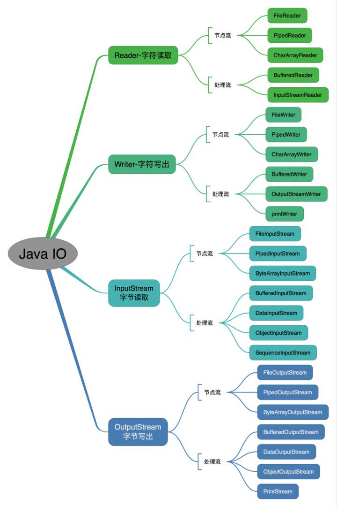
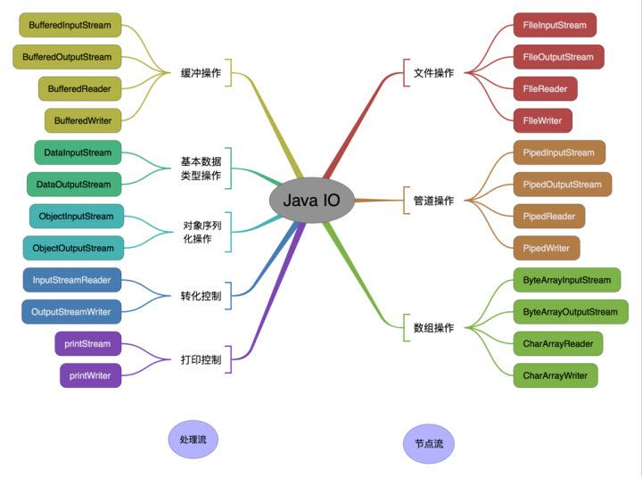

Java基础知识 基础语法-IO流
java 中 IO 流分为几种?
- 按照流的流向分，可以分为输入流和输出流；
- 按照操作单元划分，可以划分为字节流和字符流；
- 按照流的角色划分为节点流和处理流。
Java IO 流共涉及 40 多个类，这些类看上去很杂乱，但实际上很有规则，而且彼此之间存在非常紧密的联系， Java IO 流的 40 多个类都是从如下 4 个抽象类基类中派生出来的。
InputStream/Reader: 所有的输入流的基类，前者是字节输入流，后者是字符输入流。OutputStream/Writer: 所有输出流的基类，前者是字节输出流，后者是字符输出流。
按操作方式分类结构图：
按操作对象分类结构图：
BIO,NIO,AIO 有什么区别?
简答
- BIO：
Block IO同步阻塞式IO，就是我们平常使用的传统IO，它的特点是模式简单使用方便，并发处理能力低。 - NIO：
Non IO同步非阻塞IO，是传统IO的升级，客户端和服务器端通过Channel（通道）通讯，实现了多路复用。 - AIO：
Asynchronous IO是NIO的升级，也叫NIO2，实现了异步非堵塞IO，异步IO的操作基于事件和回调机制。
详细回答
BIO (Blocking I/O): 同步阻塞
I/O模式，数据的读取写入必须阻塞在一个线程内等待其完成。在活动连接数不是特别高（小于单机1000）的情况下，这种模型是比较不错的，可以让每一个连接专注于自己的I/O并且编程模型简单，也不用过多考虑系统的过载、限流等问题。线程池本身就是一个天然的漏斗，可以缓冲一些系统处理不了的连接或请求。但是，当面对十万甚至百万级连接的时候，传统的BIO模型是无能为力的。因此，我们需要一种更高效的I/O处理模型来应对更高的并发量。NIO (New I/O):
NIO是一种同步非阻塞的I/O模型，在Java 1.4中引入了NIO框架，对应java.nio包，提供了Channel,Selector，Buffer等抽象。NIO中的N可以理解为Non-blocking，不单纯是New。它支持面向缓冲的，基于通道的I/O操作方法。NIO提供了与传统BIO模型中的Socket和ServerSocket相对应的SocketChannel和ServerSocketChannel两种不同的套接字通道实现,两种通道都支持阻塞和非阻塞两种模式。阻塞模式使用就像传统中的支持一样，比较简单，但是性能和可靠性都不好；非阻塞模式正好与之相反。对于低负载、低并发的应用程序，可以使用同步阻塞I/O来提升开发速率和更好的维护性；对于高负载、高并发的（网络）应用，应使用NIO的非阻塞模式来开发AIO (Asynchronous I/O):
AIO也就是NIO 2。在Java 7中引入了NIO的改进版NIO 2,它是异步非阻塞的IO模型。异步IO是基于事件和回调机制实现的，也就是应用操作之后会直接返回，不会堵塞在那里，当后台处理完成，操作系统会通知相应的线程进行后续的操作。AIO是异步IO的缩写，虽然NIO在网络操作中，提供了非阻塞的方法，但是NIO的IO行为还是同步的。对于NIO来说，我们的业务线程是在IO操作准备好时，得到通知，接着就由这个线程自行进行IO操作，IO操作本身是同步的。查阅网上相关资料，我发现就目前来说AIO的应用还不是很广泛，Netty之前也尝试使用过AIO，不过又放弃了。
Files 的常用方法都有哪些？
Files.exists()：检测文件路径是否存在。Files.createFile()：创建文件。Files.createDirectory()：创建文件夹。Files.delete()：删除一个文件或目录。Files.copy()：复制文件。Files.move()：移动文件。Files.size()：查看文件个数。Files.read()：读取文件。Files.write()：写入文件。
Java基础知识 基础语法-IO流